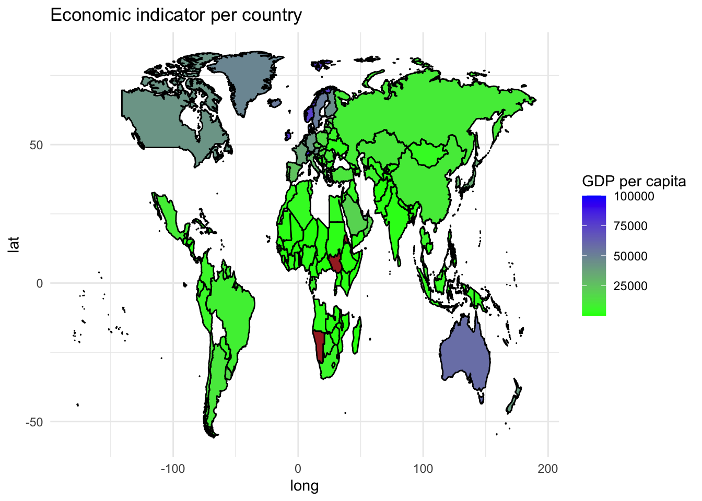
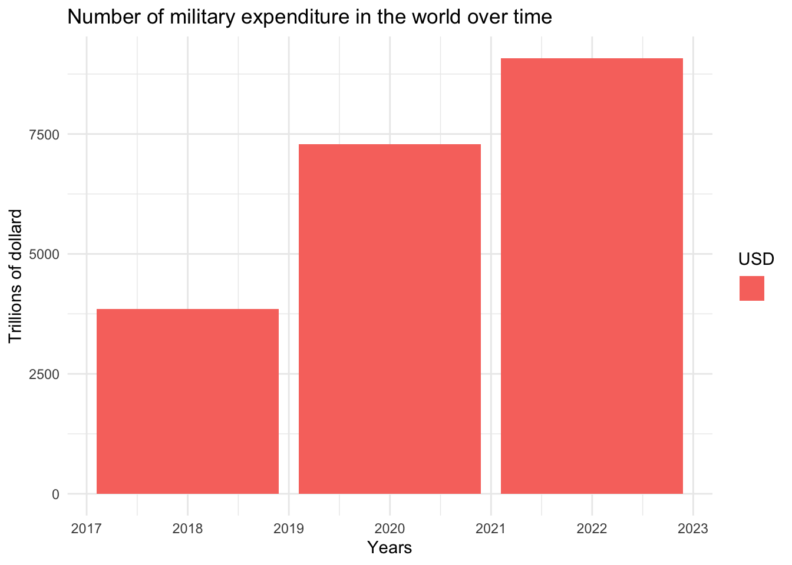
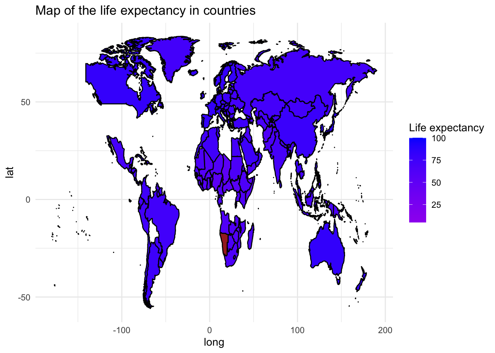

A Tale of Two Worlds: Unveiling Global Disparities through Military Expenditure, GDP per Capita, and Life Expectancy
Data Analytic Assignment
Story of Fatima and Paul
FATIMA and PAUL are both students in Congo and France respectively. They are studying in their respective countries and face different problems. The lack of resources and the economic fragility due to years of civil war on the one hand, and the fluctuation of inflation and the war in Europe on the other.
Understanding the dynamics of life expectancy, GDP per capita, and military spending is essential to comprehending the global landscape of human development in today’s interconnected world. These three variables show the differences that exist both within and between countries in addition to serving as indicators of a nation’s economic and social well-being.
We can examine the ways in which these dimensions converge and diverge using data visualization, illuminating the intricate relationship that exists between security, wealth, and quality of life. By looking at the experiences of people who live in various parts of the world, we can learn more about the things that influence their day-to-day lives and the difficulties they encounter.
In order to find patterns and trends that highlight the disparities in development and security between regions, we will examine data on military spending, GDP per capita, and life expectancy. We hope to draw attention to the disparities that exist in our global community and the necessity of equitable and sustainable development for all by looking at the experiences of people from Europe and Africa.
Overview of the economic development of countries
Part 1
The harsh realities of economic fragility taint Fatima’s reality in Africa. Fatima and her community have a difficult time getting access to opportunities for advancement and basic necessities because the GDP per capita is barely above the poverty line. Paul’s life in Europe, on the other hand, is marked by financial security and prosperity, with a high GDP per capita that reflects the wealth and bounty of the continent. The stark differences in wealth between Paul and Fatima’s worlds underscore the pervasive disparities that still exist between areas, influencing people’s opportunities according to where they live.
The Rise of Global Military Expenditure

Part 2
Another aspect of inequality that shows up as the sun sets on Africa and rises on Europe is military spending, which is best exemplified by the ongoing conflict in Ukraine. Global military spending has increased recently, driven by regional conflicts and geopolitical tensions that pose a threat to peace and stability on a global scale. This increase has been especially noticeable in Europe, where countries like Paul’s home country have increased their defense spending in reaction to growing security risks and threats. The ongoing conflict in Ukraine serves as a sobering reminder of the constant threat of war and the necessity of maintaining strong military capabilities in order to protect sovereignty and territorial integrity. Africa, on the other hand, spends very little on the military, which is indicative of the region’s constrained defense budget in the face of competing development priorities. The stark differences in military spending that exist between the two continents highlight the different approaches each takes to managing geopolitical unrest and maintaining international security.

Part 3
Regarding health, life expectancy is a sensitive measure of a country’s level of well-being and quality of healthcare system. Europe has the longest life expectancy in the world, a testament to the region’s dedication to encouraging longevity and vitality in its people. This is because the continent offers universal access to high-quality healthcare. In the meantime, life expectancy in Africa is still relatively low, and the continent’s residents’ ambitions are constrained by their restricted access to resources and healthcare. The huge differences in healthcare outcomes and access between the two continents are highlighted by the difference in life expectancy, which also highlights the difficulties Fatima and her counterparts face in achieving optimal health and well-being.
Conclusion
Fatima and Paul’s disparate lives provide a sobering window into the systemic injustices that continue to exist on a worldwide basis. We are reminded of the critical need for coordinated efforts to address the underlying causes of inequality and promote a more equitable world for all as we consider their journeys. We can work toward a future where every person, regardless of where they live, has the opportunity to thrive and prosper by bridging the gap between regions and guaranteeing access to opportunities and resources.